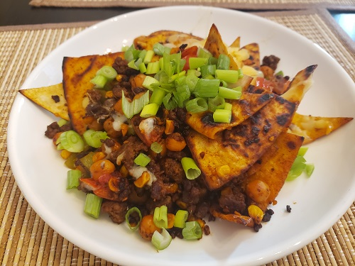
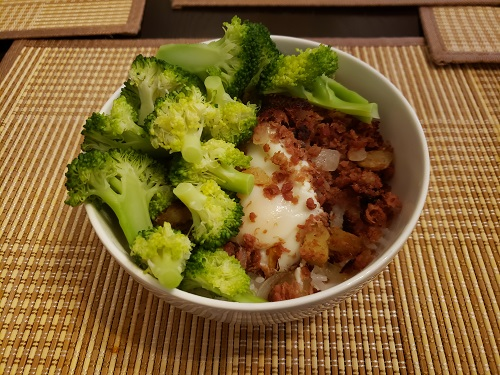

Castro Valley Cooking Club
What do we do? 🍲
We cook! Whether you're completely new to cooking anything, a home cook looking for more ideas, if you want some company while cooking, we're here for you! Every week we'll cook something new, so let's chat, cook, and have some fun!
Cooking Events 🍝
For each event, we will be putting together a meal for breakfast, lunch, or dinner. We take suggestions, vote for our choice every week, and then we'll meet up and cook the meal together. Join us with your family and friends, and then enjoy the fruits of your labor together.
Cook with us! 🥪
Some recipes may require tools that you may not be able to find at home or an ingredient that you have a difficult time finding or may not need otherwise. Never fear! You may join us in person and we will provide everything we need for the day's recipe. If you have most of the necessary tools and ingredients at home, you may choose to remain at home and simply join us for some cooking company.